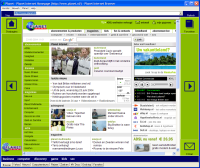
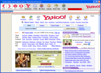

Provider Browser.
{kind=link}
This is a testing-program, implementing the idea of having a
dynamic
browser/file manager-interface, build from plain xml-files and images.
It can be used to test new browser and file manager interfaces. It is
not
finished, but it works very well and quite stable.
If you want to play with the interface, check out the data
directory: http://providerbrowser.mediavilla.nl/data/.
These files are used to build all interfaces for the browser. If you
want to change things, get the files from the data-directory (here is a zip-file
with all of them) and put them
in a folder you like. Then create a shortcut like this:
"C:\Program Files\Provider
Browser\ProviderBrowser.exe" c:/yourfolder/myowninterface.xda
to use your own interface directly. Note: the program can crash when
using your own interface.
You can go even further by putting all files
from the data
directory (from this
zip-file) in your own
(http://) directory. Then right-click on the ProviderBrowser tray-icon
and click the options. In the options, select the third radio-button,
and change the text-box labelled 'Beginadres' (this is Dutch for
starting-address) to the (http://) directory you created. The
providerbrowser will get the index.xdi file and use it to build the
interface at startup.
{kind=link}
You can contact me/comment at the contact-page or via
"vanwijk at mediavilla .removethisbecauseihatespammers.nl". Use at
your own risk!
The files:
Provider
Browser Setup
To get it to work: just install this setup program. A link with the
various interfaces will be on the desktop, in the folder 'Provider
Browser Stuff'.
Viewers
With the Viewers package, files are viewable in the file
manager-part.
Before installing the viewers, put this vcl50.zip in your Windows
directory: vcl50